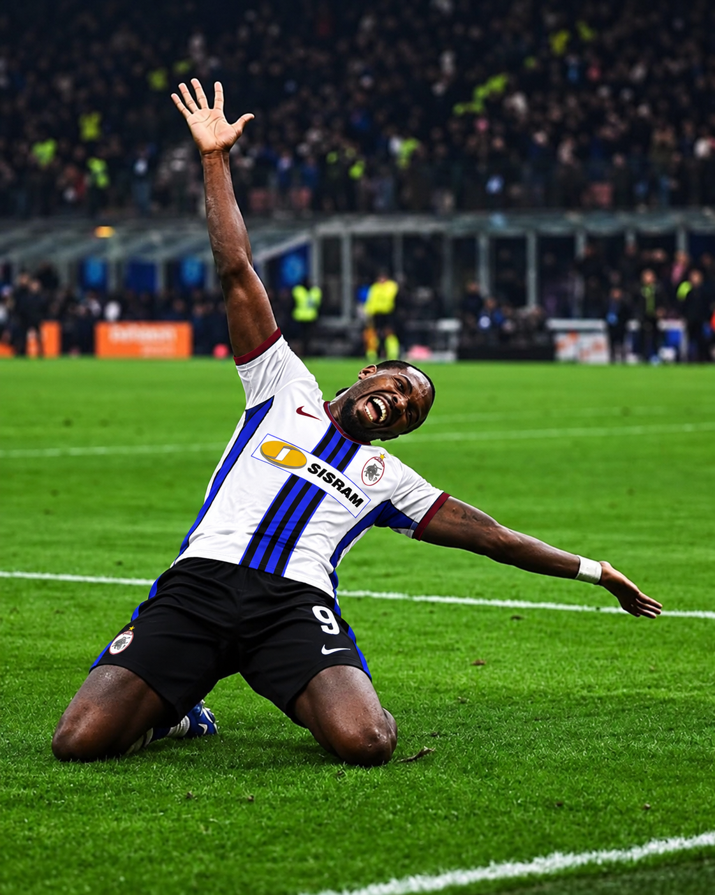

Intertor da favola: ritorno sul podio
Osmajic, Lang e Thuram trascinano la squadra, che risale sette posizioni e si porta al terzo posto, dietro Profonda Aurora e Vaientus.

L'Intertor domina la giornata grazie all'impressionante capacità offensiva di colpire con più attaccanti. Osmajic, Lang e Thuram riescono a sopperire alla giornata no di capitan Berardi e, assieme a Kessie e Veiga, costruiscono un risultato di giornata da favola. La squadra scala ben sette posizioni e si issa sul gradino più basso del podio, dietro soltanto Profonda Aurora e Vaientus.
I campioni e attuali leader sfoderano un'altra giornata di spessore, piazzandosi alle spalle dell'Intertor come punteggio, mantenendo la vetta e scrollandosi di dosso i rivali della Vaientus. I valsusini, pur non disputando una brutta giornata, perdono contatto dalla Profonda ma ampliano il distacco sulla terza, che non è più il Monaco, scivolato al quarto posto.
Risale di due posizioni anche la Dinamo, con un buon punteggio che le permette di superare Real Doratom ed Evertor, ora sesti e ottavi, con lo Spartak al settimo posto. Il resto della classifica vede un buon Wild risalire all'undicesima posizione, con Lobe e Taurinorum rispettivamente al decimo e nono posto. Sul fondo la Zuluzebra lascia l'ultima posizione ai rivali del Castel e si porta a soli 0,5 punti dal Tomcat, dodicesimo.